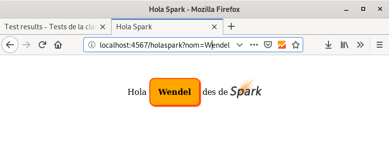

Afegim recursos¶
Molt bé. Ara ja som capaços de construir una aplicació Web senzilla amb una plantilla. Però el resultat no deixa de ser un HTML nu. Estaria bé afegir-li una mica de color i, potser, alguna imatge.
Els elements com ara CSS o imatges, es solen anomenar recursos estàtics en el món Web. Es tracta de fitxers que no depenen de la interacció i que sempre s’han de lliurar tal qual.
Com que la nostra aplicació, pel que respecta a aquest curs, no s’ha de preocupar de com s’executarà en producció (a un servidor real), ens resultarà força senzill.
Per començar, modifiquem la plantilla de manera que inclogui l’enllaç a un CSS i a una imatge.
El resultat que perseguim és:
Per a aconguir-ho, ens caldran alguns petits canvis. Per començar, necessitarem guardar el CSS i la image. La jerarquia de carpetes esperada és:
.
├── …
├── build.gradle
└── src
├── main
│ ├── java
│ │ └── Main.java
│ └── resources
│ ├── css
│ │ └── default.css
│ ├── img
│ │ └── logo.svg
│ └── spark
│ └── template
│ └── freemarker
│ └── holaspark.html
└── test
└── java
└── TestMain.java
Canviarem la plantilla:
1 2 3 4 5 6 7 8 9 10 11 12 13 | <!DOCTYPE html>
<html>
<head>
<title>Hola Spark</title>
<link rel="stylesheet" type="text/css" media="all" href="css/default.css" />
</head>
<body>
<p>
Hola <b>${nom}</b> des de
<a href="http://sparkjava.com/"><img src="img/logo.svg"></a>
</p>
</body>
</html>
|
Fixa’t que ara indiquem un CSS (línia 5) i una imatge a la línia 10.
Pots descarregar-te el logo del seu lloc original.
{kind=link}
El fitxer CSS que generaria el resultat que cerco pel navegador Firefox seria:
1 2 3 4 5 6 7 8 9 10 11 12 13 14 15 16 17 | body {
text-align: center;
}
b {
border: 2px solid orangered;
border-radius: 10px;
background: orange;
box-shadow: 2px 2px 1px orangered;
padding: 1em;
}
img {
width: 4em;
height: 4em;
position: relative;
top: 1.2em;
}
|
Finalment ens caldrà indicar a Spark on pot trobar els fitxers:
7 8 9 10 11 12 13 14 15 16 17 18 19 20 21 22 23 24 25 26 27 28 29 30 31 32 33 34 35 | import java.util.HashMap;
import java.util.Map;
import static spark.Spark.get;
import static spark.Spark.staticFiles;
import spark.ModelAndView;
import spark.template.freemarker.FreeMarkerEngine;
public class Main {
static String composaSalutacio(String nom) {
if (nom == null || nom.isEmpty()) {
nom = "món";
}
return nom;
}
public static void main(String[] args) {
staticFiles.location("/");
get("/holaspark",
(rq, rs) -> {
String nom = composaSalutacio(rq.queryParams("nom"));
Map<String, Object> params = new HashMap<>();
params.put("nom", nom);
return new ModelAndView(params, "holaspark.html");
}, new FreeMarkerEngine());
}
}
|
Bàsicament introduïm la línia 25 per indicar a Spark que pot trobar els
fitxers estàtics a l’arrel del projecte. Aquesta arrel es correspon per
defecte amb la carpeta src/main/resources/.
Executem i… voilà! Ja ho tenim.
Exercici 8. Capicua amb bon aspecte¶
Tornem al projecte de capicua.
En aquesta ocasió afegirem estils a la nostra aplicació.
Aquí pots, des d’adaptar el css de l’aplicació de salutacions, a afegir animacions amb CSS que facin donar voltes a la paraula capicua.
Ah! I si ho trobes, pots afegir-li alguna imatge. Per exemple, la foto de la nostra heroïna capicua Anna.